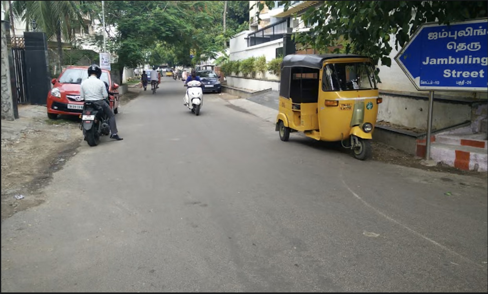
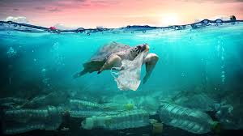
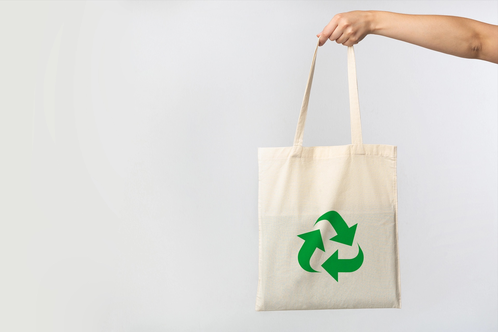
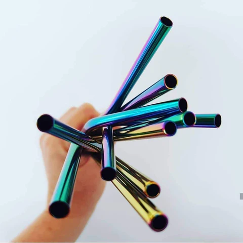
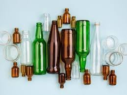

Plastic Roads in India
India has built more than 60,000 miles of roads using recycled plastic, reducing waste and improving durability.
Read MorePlastic pollution is a critical issue facing the environment today. The over-reliance on plastics and lack of effective recycling facilities have caused significant harm to our oceans and wildlife.
Causes: Overproduction of single-use plastics, poor waste management, and excessive consumption.
Effects: Ocean pollution, harm to marine life, microplastic contamination, and climate change.


Switch to cloth or jute bags for daily shopping needs.

Replace plastic straws with reusable metal ones.

Opt for glass or stainless steel bottles instead of plastic.
Take this fun quiz to find out how you can reduce your plastic footprint!
Take the QuizDiscover how communities and individuals are making a difference in reducing plastic pollution.

Afroz Shah, a lawyer, led the world's largest beach cleanup in Mumbai, removing over 9 million kg of trash.
Read More
India has built more than 60,000 miles of roads using recycled plastic, reducing waste and improving durability.
Read More
A nonprofit organization used plastic waste to create artificial reefs, restoring marine ecosystems.
Read MoreCompany Name: EcoWise Solutions
Email: contact@ecowise.com
Have questions or feedback?
Fill out our form here: Contact Form